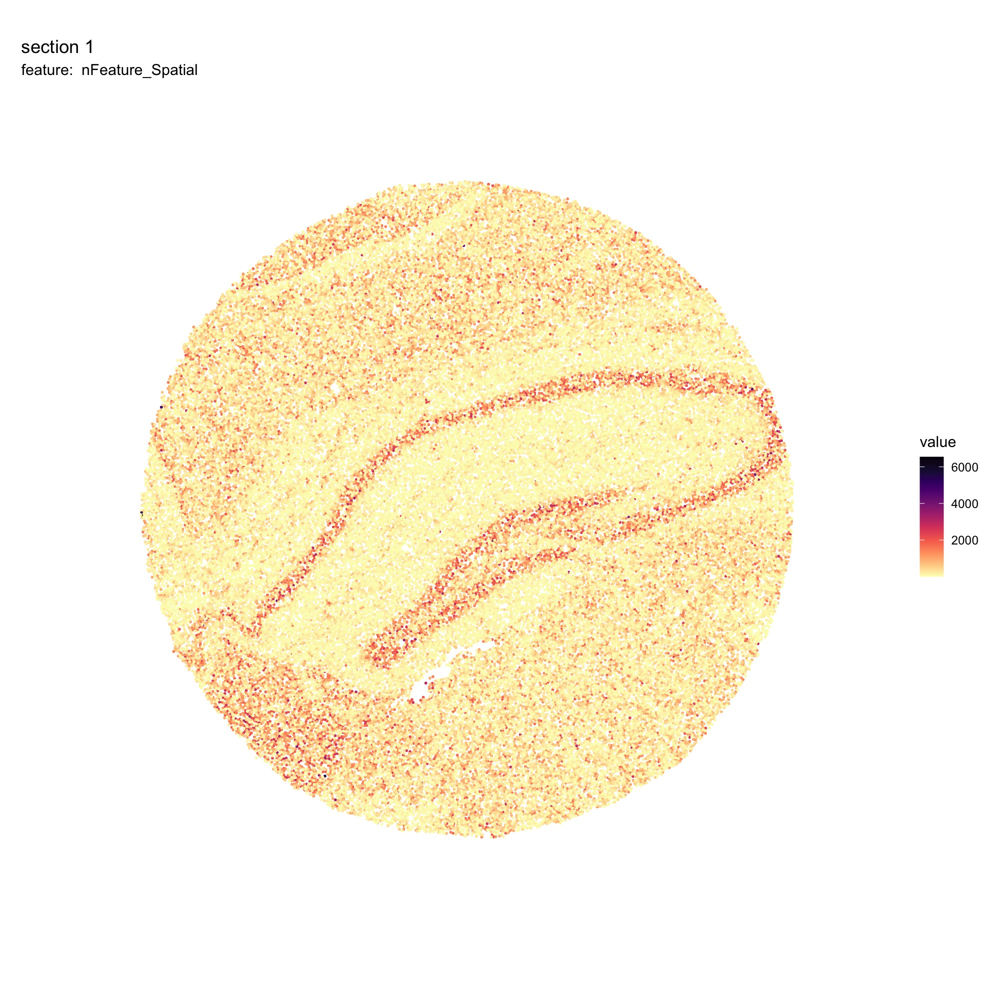
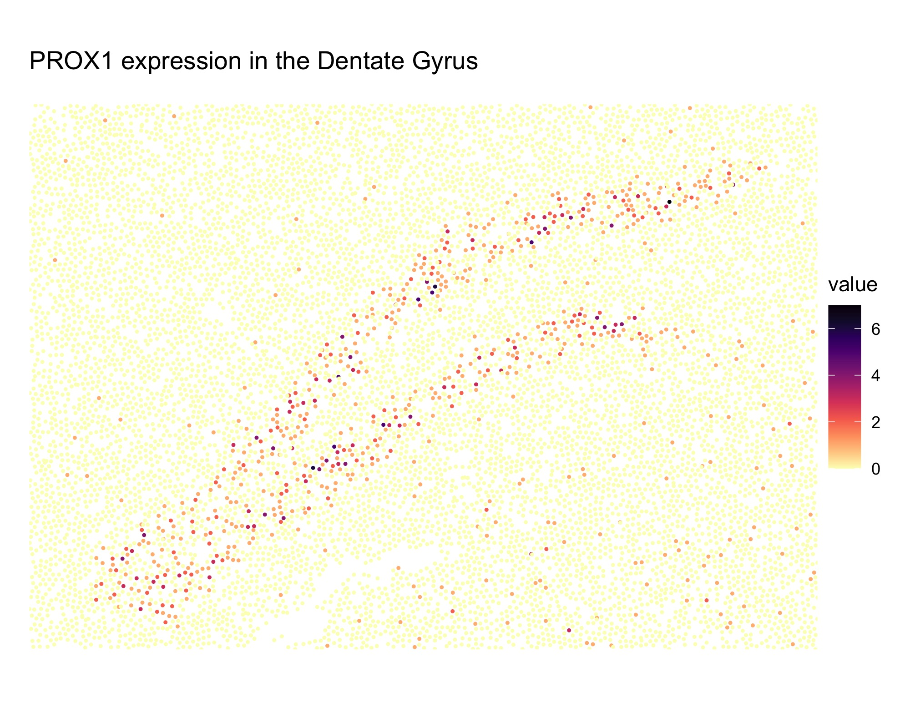

Slide-Seq data
Last compiled: 18 September 2024
slide-seq.RmdIn this article, we’ll demonstrate how to load Slide-Seq data with
semla. First, we need to load a Seurat object
with Slide-Seq data. Here we’ll use a prepared Seurat
object that can be install with the SeuratData R
package.
See ?ReadSlideSeq for more information on how to load
raw data.
library(semla)
library(SeuratData)
InstallData("ssHippo")
slide_seq <- LoadData("ssHippo")Next, we can convert the Seurat object to make it
compatible with semla using the
UpdateSeuratForSemla function. Note that the Slide-Seq data
doesn’t contain H&E images and therefore, all image related
functionality of semla will be inaccessible. This includes
the Feature Viewer and image alignment tools which requires H&E
images to work.
slide_seq_semla <- UpdateSeuratForSemla(slide_seq)Now we can use visualization functions from semla on our
Slide-Seq data.
MapFeatures(slide_seq_semla, features = "nFeature_Spatial", colors = viridis::magma(n = 11, direction = -1)) & ThemeLegendRight()
Zoom in on Dentate gyrus:
MapFeatures(slide_seq_semla, features = "PROX1", colors = viridis::magma(n = 11, direction = -1),
crop_area = c(0.35, 0.45, 0.7, 0.7)) &
ThemeLegendRight() &
ggtitle("PROX1 expression in the Dentate Gyrus", subtitle = "")
Package versions
-
semla: 1.1.6
Session info
## R version 4.4.0 (2024-04-24)
## Platform: aarch64-apple-darwin20
## Running under: macOS Sonoma 14.5
##
## Matrix products: default
## BLAS: /Library/Frameworks/R.framework/Versions/4.4-arm64/Resources/lib/libRblas.0.dylib
## LAPACK: /Library/Frameworks/R.framework/Versions/4.4-arm64/Resources/lib/libRlapack.dylib; LAPACK version 3.12.0
##
## locale:
## [1] en_US.UTF-8/en_US.UTF-8/en_US.UTF-8/C/en_US.UTF-8/en_US.UTF-8
##
## time zone: Europe/Stockholm
## tzcode source: internal
##
## attached base packages:
## [1] stats graphics grDevices datasets utils methods base
##
## loaded via a namespace (and not attached):
## [1] digest_0.6.37 desc_1.4.3 R6_2.5.1
## [4] fastmap_1.2.0 xfun_0.47 cachem_1.1.0
## [7] knitr_1.48 htmltools_0.5.8.1 rmarkdown_2.28
## [10] lifecycle_1.0.4 cli_3.6.3 sass_0.4.9
## [13] pkgdown_2.1.0 textshaping_0.4.0 jquerylib_0.1.4
## [16] renv_1.0.2 systemfonts_1.1.0 compiler_4.4.0
## [19] rstudioapi_0.16.0 tools_4.4.0 ragg_1.3.3
## [22] bslib_0.8.0 evaluate_0.24.0 yaml_2.3.10
## [25] BiocManager_1.30.25 jsonlite_1.8.8 htmlwidgets_1.6.4
## [28] rlang_1.1.4 fs_1.6.4